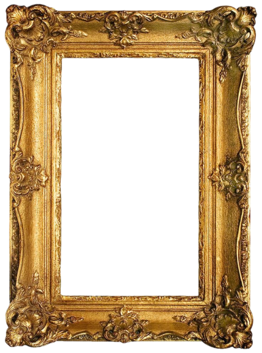

AI Tool Used: Pollo AI
Prompt: Based on the picture, create a magical moving portrait in a landscape orientation inspired by the wizarding world of Harry Potter. Two people stand side-by-side in front of a softly decorated background. Put them in a vintage wall background.
Transform them into Hogwarts students: the woman wearing a Ravenclaw uniform with a long black robe and blue tie, and the man wearing a Gryffindor uniform with a long black robes and red tie. Both are holding wands, and gently waving their free
hand as if greeting the viewer. They smile warmly toward the camera. The image should animate subtly like a moving portrait inside a wizarding picture frame—soft motions such as slight hand movement, blinking, and gentle robe movement.
Render everything in black and white with a vintage, enchanted atmosphere, slightly glowing edges, soft shadows, and an old-photograph texture.